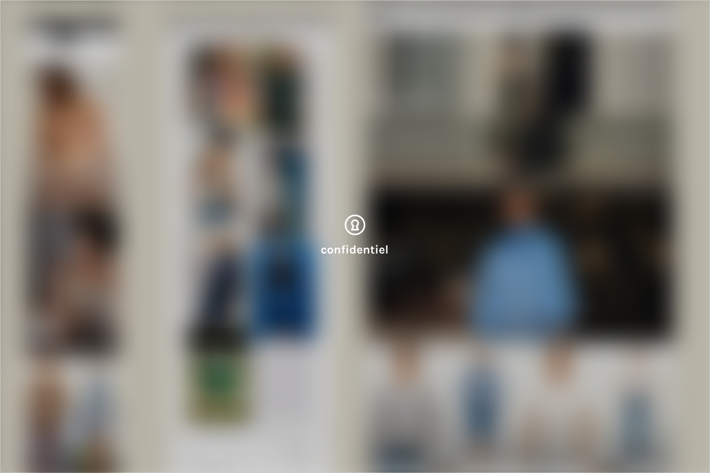
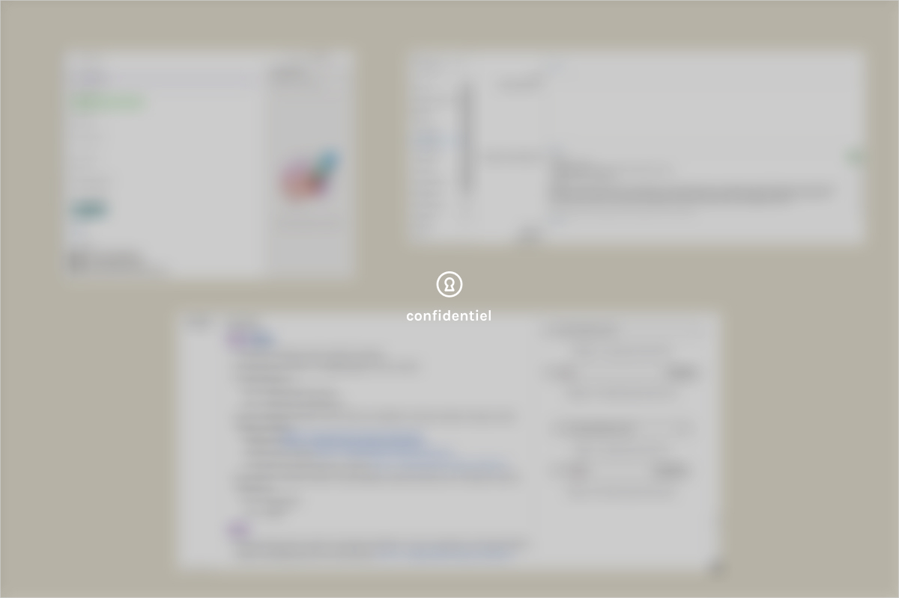

Problèmes
- Comment concevoir et maintenir des expériences digitales cohérentes pour deux marques à identités distinctes, dans un contexte de fusion bi-brand ?
Mission alternance - 2026 - webdesigner
Alternance au cœur d'un groupe international de mode. Maquettage, intégration et amélioration UX-UI pour deux marques de mode féminines sur l'e-commerce web et application.
Contactez-moi →01 — Contexte
Alternance au sein de l'équipe Web Design de Fast Retailing France, en charge des deux marques Comptoir des Cotonniers et Princesse tam.tam. Missions couvrant la conception UX-UI, le maquettage, l'intégration e-commerce et l'amélioration continue des interfaces digitales.
02 — Problématique & objectifs
Problèmes
Objectifs
03 — Processus
01
Analyse du brief et du plan d'animation e-commerce. Benchmark des tendances fashion/retail et analyse des résultats d'A/B testing.
02
Analyse des comportements utilisateurs via l'A/B testing, identification des points de friction et exploitation des données CRM.
03
Création de wireframes et maquettes Figma : homepages, bannières, pop-ins et pages d'opérations commerciales (Soldes, Noël, etc.).
04
Validation des designs avec les équipes métier, boucles de feedback et itérations sur l'environnement de staging.
05
Intégration sur Salesforce Commerce Cloud et Page Designer, avec une adaptation responsive desktop et mobile rigoureuse.
06
Réunions hebdomadaires d'analyse des résultats et des performances pour orienter les prochaines optimisations.
04 — Solution
Création de visuels alignés avec l’ADN de la marque, conception de pages dédiées à la mise en avant des produits et optimisation du parcours utilisateur pour une navigation plus fluide et intuitive.


Certains détails restent confidentiels, mais n'hésitez pas à me contacter si vous voulez en savoir plus : Contactez-moi →
05 — Résultats
06 — Compétences
Exploration